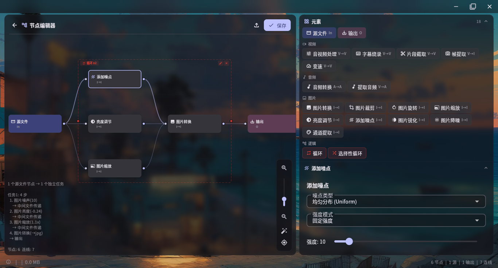

节点式编辑器
6000x6000 虚拟画布，自由拖拽连线。左键框选，右键菜单，滚轮缩放，像专业 DAW 一样流畅。支持逻辑块循环，实现批处理自动化。

25+ 处理节点自由组合，从简单格式转换到复杂批处理，一切尽在掌握
6000x6000 虚拟画布，自由拖拽连线。左键框选，右键菜单，滚轮缩放，像专业 DAW 一样流畅。支持逻辑块循环，实现批处理自动化。
转码、剪辑、调速、抽帧、字幕烧录，覆盖日常所有视频操作。
裁剪、旋转、缩放、亮度、降噪、锐化、通道提取，9 大图像节点。
音频转码、变速、音量调整、动态压缩、元信息编辑、提取音轨（带预览播放）。
用逻辑框选包裹节点，循环执行 N 次或随机选择操作。
Windows x64、Linux x64/ARM64、macOS Universal 原生支持。
遵循 Google Material Design 设计语言，色彩克制、层次分明、操作直觉
拖动滑块查看格式转换前后的对比 — 同一张图片，画质几乎无损，文件体积大幅缩小
<标记1>.png)
<标记1>.jpg)
拖入视频、图片或音频文件，自动识别格式和元数据
在画布上添加处理节点，用连线构建处理管线，实时预览参数
点击运行，自动调度 FFmpeg 执行全部操作，进度实时可见
支持 Windows、Linux x64、Linux ARM64 和 macOS，完全免费开源
x86_64
Inno Setup 安装程序
x86_64 / aarch64
.deb 安装包
Universal (x64 + ARM64)
DMG 磁盘映像